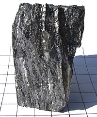

Numero atomico: 4
Massa atomica: 9,012
Temperatura di fusione (°C): 1288
Temperatura di ebolizione (°C): 2471
Energia di prima ionizzazione (kj/mol): 899
Elettronegatività (secondo Pauling): 1,57
Densità: 1,85
Numeri di ossidazione: +2
Configurazione elettronica: 1s2, 2s2
Maggiori Informazioni